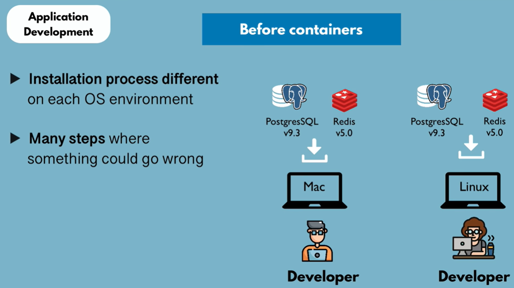
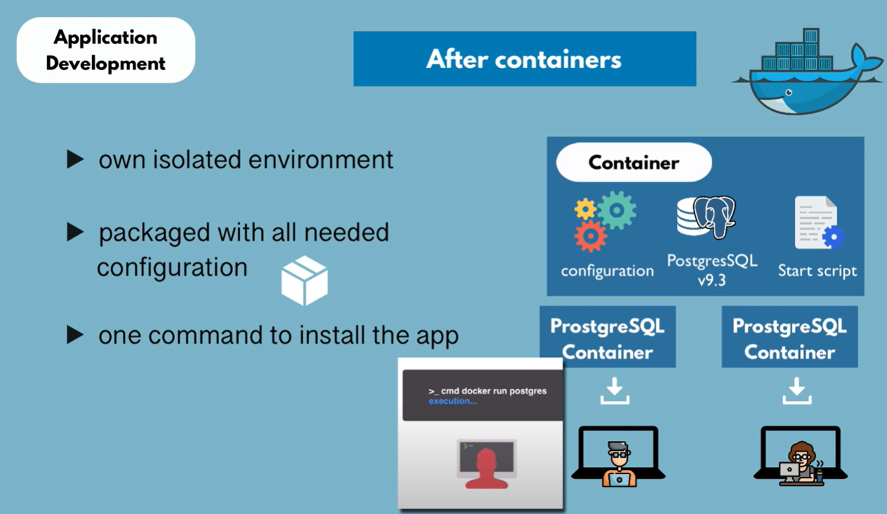
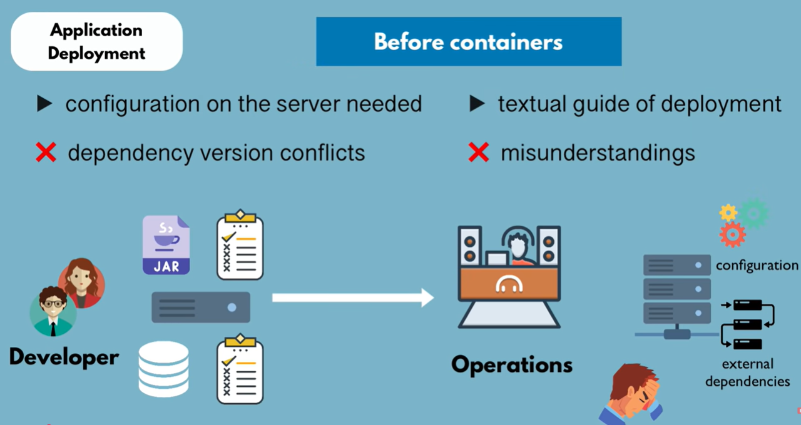
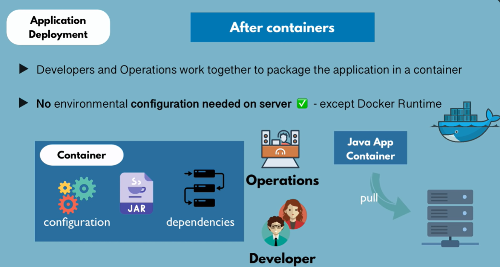

A hands-on guide for developers & DevOps engineers




Docker Engine (dockerd) is the server-side daemon that actually builds and runs containers. Where it runs depends on your OS.
Docker Engine runs natively on the host OS. Containers use Linux kernel features (cgroups, namespaces) directly — no VM, no overhead.
Since macOS has no Linux kernel, Docker Desktop spins up a small Linux VM behind the scenes. Docker Engine runs inside it — you never notice it's there.
Windows needs the same Linux layer. DInstall Docker Engine directly inside a WSL2 Linux distro. ⚠️ DO NOT USE DOCKER DESKTOP!
dockerd via a socket. Whether that daemon runs on bare metal or inside a VM is completely transparent to you.
A read-only template that contains everything needed to run an application: code, runtime, libraries, environment variables, and config files. Images are built in layers — each instruction in a Dockerfile adds a layer.
A running instance of an image. When you start a container, Docker creates an isolated process with its own filesystem (copied from the image), network interface, and process space.
The core runtime that builds and runs containers. It uses a client-server architecture with three components: the Docker Daemon (dockerd), the Docker CLI, and a REST API that connects them.
dockerd) — the server process that manages containers, images, and networksdocker) — the command-line tool you interact withA storage and distribution system for Docker images. Think of it as npm or PyPI, but for container images. The default public registry is Docker Hub.
wsl --install in PowerShell (as Admin) and reboot — Ubuntu is installed by default
docs.docker.com/engine/install/ubuntu inside your WSL2 terminal
docker --version and docker info — confirm the daemon is running
docker run hello-world — Docker pulls the image and prints a success message
Fetch the official PostgreSQL image from Docker Hub. This downloads all the image layers to your local machine.
localhost:5432 as usual.
localhost:5432 using user admin / password secret.
Pull my image and get it running — no hints, no guidance. Use everything you've learned today.
--name demoApp.-p 8080:80.The Problem — "works on my machine" eliminated by packaging app + deps together
Core concepts — Image (blueprint), Container (running instance), Docker Engine (daemon + CLI), Registry (image store)
PostgreSQL demo — pulled, ran, connected, and cleaned up a database in minutes
Isolation — each container gets its own filesystem, network, and process space; no interference with the host
Portability — same image runs identically on dev laptop, CI server, and production host
Ephemerality — containers are disposable; state lives in volumes, not in the container itself
Dockerfile — write your own image build instructions
Docker Compose — orchestrate multi-container apps (app + db + cache) with one YAML file
Volumes & networks — persist data and wire services together
Registries — push images to Docker Hub or a private registry for team sharing